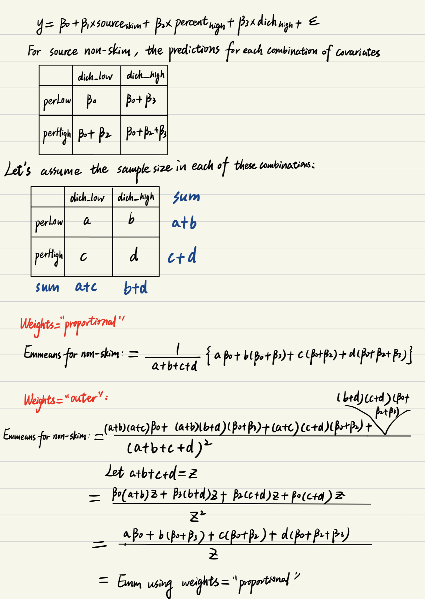

In this project, I pioneered research on weights options in Estimated
Marginal Means (EMMs), clarifying application practices through
empirical testing and mathematical analysis. Additionally, I
collaborated with my colleagues at Mental Health Data Science, Columbia
University Department of Psychiatry and New York State Psychiatric
Institute to test and understand the “type” and “regrid” options in
EMMs, and figured out the calculation methods of EMMs from models with
link function for emmeans function in R,
Genmod lsmeans and %margins macro in SAS.
You can find our slides here and my code packet below.
data(pigs)
set.seed(123)
bound <- mean(pigs$conc)
pigs_df <- pigs %>%
mutate(
dich = factor(case_when(
conc <= bound ~ "Low",
TRUE ~ "High"),
levels = c("Low", "High")
),
source = factor(case_when(
source == "skim" ~ "skim",
TRUE ~ "non-skim")
),
source_num = as.numeric(source == "non-skim"),
noise = rnorm(n(), mean = 0, sd = 1),
x = 1 * source_num + 0.5 * conc + noise
) %>%
select(source, x, percent, conc, dich)
saveRDS(pigs_df, file = "data/pigs_modified.rds")
write_csv(pigs_df, "data/pigs_modified.csv")
# data <- readRDS(file = "pigs_modified.rds")
# write_csv(pigs, "pigs.csv")## Let emmeans output more digits
emm_options(opt.digits = FALSE)
## Our test data
pigs_df## source x percent conc dich
## 1 non-skim 14.33952 9 27.8 Low
## 2 non-skim 12.61982 9 23.7 Low
## 3 non-skim 18.30871 12 31.5 Low
## 4 non-skim 15.32051 12 28.5 Low
## 5 non-skim 17.52929 12 32.8 Low
## 6 non-skim 19.71506 15 34.0 Low
## 7 non-skim 15.61092 15 28.3 Low
## 8 non-skim 15.03494 18 30.6 Low
## 9 non-skim 16.66315 18 32.7 Low
## 10 non-skim 17.40434 18 33.7 Low
## 11 non-skim 21.87408 9 39.3 High
## 12 non-skim 18.75981 9 34.8 Low
## 13 non-skim 16.30077 9 29.8 Low
## 14 non-skim 21.01068 12 39.8 High
## 15 non-skim 20.44416 12 40.0 High
## 16 non-skim 22.33691 12 39.1 High
## 17 non-skim 20.74785 15 38.5 High
## 18 non-skim 18.63338 15 39.2 High
## 19 non-skim 21.70136 15 40.0 High
## 20 non-skim 21.97721 18 42.9 High
## 21 skim 19.23218 9 40.6 High
## 22 skim 15.28203 9 31.0 Low
## 23 skim 16.27400 9 34.6 Low
## 24 skim 20.72111 12 42.9 High
## 25 skim 24.42496 12 50.1 High
## 26 skim 17.01331 12 37.4 High
## 27 skim 30.58779 15 59.5 High
## 28 skim 20.85337 15 41.4 High
## 29 skim 28.76186 18 59.8 Highmod_unadjusted <- lm(conc ~ source, data = pigs_df)
summary(mod_unadjusted)##
## Call:
## lm(formula = conc ~ source, data = pigs_df)
##
## Residuals:
## Min 1Q Median 3Q Max
## -13.144 -4.550 -1.244 4.950 15.656
##
## Coefficients:
## Estimate Std. Error t value Pr(>|t|)
## (Intercept) 34.350 1.597 21.505 < 2e-16 ***
## sourceskim 9.794 2.867 3.416 0.00203 **
## ---
## Signif. codes: 0 '***' 0.001 '**' 0.01 '*' 0.05 '.' 0.1 ' ' 1
##
## Residual standard error: 7.143 on 27 degrees of freedom
## Multiple R-squared: 0.3018, Adjusted R-squared: 0.2759
## F-statistic: 11.67 on 1 and 27 DF, p-value: 0.002026emmeans(mod_unadjusted, "source", infer = TRUE, null = 0)## source emmean SE df lower.CL upper.CL t.ratio p.value
## non-skim 34.35000 1.597296 27 31.07262 37.62738 21.505 <.0001
## skim 44.14444 2.381109 27 39.25881 49.03008 18.539 <.0001
##
## Confidence level used: 0.95\[y = 34.35 + 9.794 * source_{skim} + \varepsilon\]
## EMM for source non-skim
34.35## [1] 34.35## EMM for source skim
34.35 + 9.794## [1] 44.144# Raw marginal means of the data
with(pigs_df, tapply(conc, source, mean))## non-skim skim
## 34.35000 44.14444The unadjusted mean, is just the raw marginal mean.
mod_1 <- lm(conc ~ source + x + factor(percent) + dich, data = pigs_df)
summary(mod_1)##
## Call:
## lm(formula = conc ~ source + x + factor(percent) + dich, data = pigs_df)
##
## Residuals:
## Min 1Q Median 3Q Max
## -2.5104 -0.5047 -0.1543 0.7537 3.5890
##
## Coefficients:
## Estimate Std. Error t value Pr(>|t|)
## (Intercept) 3.72477 1.59366 2.337 0.02893 *
## sourceskim 4.16331 0.62495 6.662 1.07e-06 ***
## x 1.59508 0.09992 15.963 1.40e-13 ***
## factor(percent)12 0.01478 0.72112 0.020 0.98383
## factor(percent)15 -0.07722 0.80297 -0.096 0.92425
## factor(percent)18 2.63490 0.84219 3.129 0.00489 **
## dichHigh 2.24182 0.76683 2.923 0.00787 **
## ---
## Signif. codes: 0 '***' 0.001 '**' 0.01 '*' 0.05 '.' 0.1 ' ' 1
##
## Residual standard error: 1.369 on 22 degrees of freedom
## Multiple R-squared: 0.9791, Adjusted R-squared: 0.9734
## F-statistic: 171.7 on 6 and 22 DF, p-value: < 2.2e-16EMM_equal <- emmeans(mod_1, "source", weights = "equal", infer = TRUE, null = 0)
EMM_equal## source emmean SE df lower.CL upper.CL t.ratio p.value
## non-skim 36.26182 0.3183825 22 35.60153 36.92210 113.894 <.0001
## skim 40.42513 0.5131306 22 39.36096 41.48929 78.781 <.0001
##
## Results are averaged over the levels of: percent, dich
## Confidence level used: 0.95contrast(EMM_equal, method = "revpairwise", infer = TRUE)## contrast estimate SE df lower.CL upper.CL t.ratio p.value
## skim - (non-skim) 4.16331 0.6249491 22 2.867245 5.459375 6.662 <.0001
##
## Results are averaged over the levels of: percent, dich
## Confidence level used: 0.95EMM_flat <- emmeans(mod_1, "source", weights = "flat", infer = TRUE, null = 0)
EMM_flat## source emmean SE df lower.CL upper.CL t.ratio p.value
## non-skim 36.26182 0.3183825 22 35.60153 36.92210 113.894 <.0001
## skim 40.96905 0.5222716 22 39.88592 42.05218 78.444 <.0001
##
## Results are averaged over the levels of: percent, dich
## Confidence level used: 0.95contrast(EMM_flat, method = "revpairwise", infer = TRUE)## contrast estimate SE df lower.CL upper.CL t.ratio p.value
## skim - (non-skim) 4.707234 0.6176702 22 3.426265 5.988204 7.621 <.0001
##
## Results are averaged over the levels of: percent, dich
## Confidence level used: 0.95EMM_prop <- emmeans(mod_1, "source", weights = "proportional", infer = TRUE, null = 0)
EMM_prop## source emmean SE df lower.CL upper.CL t.ratio p.value
## non-skim 36.09759 0.3198020 22 35.43436 36.76082 112.875 <.0001
## skim 40.26090 0.5004171 22 39.22310 41.29871 80.455 <.0001
##
## Results are averaged over the levels of: percent, dich
## Confidence level used: 0.95contrast(EMM_prop, method = "revpairwise", infer = TRUE)## contrast estimate SE df lower.CL upper.CL t.ratio p.value
## skim - (non-skim) 4.16331 0.6249491 22 2.867245 5.459375 6.662 <.0001
##
## Results are averaged over the levels of: percent, dich
## Confidence level used: 0.95EMM_outer <- emmeans(mod_1, "source", weights = "outer", infer = TRUE, null = 0)
EMM_outer## source emmean SE df lower.CL upper.CL t.ratio p.value
## non-skim 36.09759 0.3198020 22 35.43436 36.76082 112.875 <.0001
## skim 40.26090 0.5004171 22 39.22310 41.29871 80.455 <.0001
##
## Results are averaged over the levels of: percent, dich
## Confidence level used: 0.95contrast(EMM_outer, method = "revpairwise", infer = TRUE)## contrast estimate SE df lower.CL upper.CL t.ratio p.value
## skim - (non-skim) 4.16331 0.6249491 22 2.867245 5.459375 6.662 <.0001
##
## Results are averaged over the levels of: percent, dich
## Confidence level used: 0.95# emmeans(mod_1, c("source", "percent"), weights = "prop") %>% emmeans("source", weights = "prop")Table for emmeans of model
conc ~ source + x + factor(percent) + dich using different
weights
| Emmeans | weights=“equal” | weights=“prop” | weights=“outer” |
|---|---|---|---|
| non-skim | 36.26182 | 36.09759 | 36.09759 |
| skim | 40.42513 | 40.26090 | 40.26090 |
In this linear model without interactions, using weights = “proportional” seems to give the same emmeans as using weights = “outer”
\[y = 3.72477 + 4.16331*source_{skim} + 1.59508x + 0.01478*percent_{12} - 0.07722*percent_{15} \\+ 2.6349*percent_{18} + 2.24182*dich_{high} + \varepsilon\]
# ref_grid creates an `emmGrid` class object
ref_grid(mod_1)## 'emmGrid' object with variables:
## source = non-skim, skim
## x = 19.293
## percent = 9, 12, 15, 18
## dich = Low, High# data.frame contains the combinations of the variables that define the reference grid. In addition, there is an auxiliary column named ".wgt." holding the observed frequencies (or weights) for each factor combination (excluding covariates).
ref_grid(mod_1)@grid## source x percent dich .wgt.
## 1 non-skim 19.29252 9 Low 4
## 2 skim 19.29252 9 Low 2
## 3 non-skim 19.29252 12 Low 3
## 4 skim 19.29252 12 Low 0
## 5 non-skim 19.29252 15 Low 2
## 6 skim 19.29252 15 Low 0
## 7 non-skim 19.29252 18 Low 3
## 8 skim 19.29252 18 Low 0
## 9 non-skim 19.29252 9 High 1
## 10 skim 19.29252 9 High 1
## 11 non-skim 19.29252 12 High 3
## 12 skim 19.29252 12 High 3
## 13 non-skim 19.29252 15 High 3
## 14 skim 19.29252 15 High 2
## 15 non-skim 19.29252 18 High 1
## 16 skim 19.29252 18 High 1# matrix. Each row consists of the linear function of the regression coefficients for predicting its corresponding element of the reference grid. The rows of this matrix go in one-to-one correspondence with the rows of grid above, and the columns with elements of bhat.
xs_mx <- ref_grid(mod_1)@linfct
xs_mx## (Intercept) sourceskim x factor(percent)12 factor(percent)15
## 1 1 0 19.29252 0 0
## 2 1 1 19.29252 0 0
## 3 1 0 19.29252 1 0
## 4 1 1 19.29252 1 0
## 5 1 0 19.29252 0 1
## 6 1 1 19.29252 0 1
## 7 1 0 19.29252 0 0
## 8 1 1 19.29252 0 0
## 9 1 0 19.29252 0 0
## 10 1 1 19.29252 0 0
## 11 1 0 19.29252 1 0
## 12 1 1 19.29252 1 0
## 13 1 0 19.29252 0 1
## 14 1 1 19.29252 0 1
## 15 1 0 19.29252 0 0
## 16 1 1 19.29252 0 0
## factor(percent)18 dichHigh
## 1 0 0
## 2 0 0
## 3 0 0
## 4 0 0
## 5 0 0
## 6 0 0
## 7 1 0
## 8 1 0
## 9 0 1
## 10 0 1
## 11 0 1
## 12 0 1
## 13 0 1
## 14 0 1
## 15 1 1
## 16 1 1# numeric. The regression coefficients
beta_vec <- ref_grid(mod_1)@bhat
beta_vec## [1] 3.72477429 4.16331005 1.59507501 0.01477854 -0.07722402 2.63489942
## [7] 2.24182362# predictions for every combination of the variables
pred <- xs_mx %*% beta_vec
pred## [,1]
## 1 34.49779
## 2 38.66110
## 3 34.51257
## 4 38.67588
## 5 34.42057
## 6 38.58388
## 7 37.13269
## 8 41.29600
## 9 36.73961
## 10 40.90292
## 11 36.75439
## 12 40.91770
## 13 36.66239
## 14 40.82570
## 15 39.37451
## 16 43.53782# Frequencies of each combination of covariates in the dataset
addmargins(with(pigs_df, table(percent, dich)), margin = 1:2)## dich
## percent Low High Sum
## 9 6 2 8
## 12 3 6 9
## 15 2 5 7
## 18 3 2 5
## Sum 14 15 29# ---------- Get the "outer" weights for calculating emmeans ----------
observed <- with(pigs_df, table(percent, dich))
## Row, column and grand totals
row_totals <- apply(observed, 1, sum)
col_totals <- apply(observed, 2, sum)
grand_total <- sum(observed)
## Calculating "expected frequencies" and outer weights
expected <- outer(row_totals, col_totals)
outer_wts <- expected/sum(expected)
outer_wts## Low High
## 9 0.13317479 0.14268728
## 12 0.14982164 0.16052319
## 15 0.11652794 0.12485137
## 18 0.08323424 0.08917955# Get the "flat" weights
ref_grid(mod_1)@grid %>%
rename(sample_size = .wgt.) %>%
group_by(source) %>%
mutate(weights = if_else(sample_size != 0, 1/sum(sample_size != 0), 0)) %>%
as.data.frame()## source x percent dich sample_size weights
## 1 non-skim 19.29252 9 Low 4 0.125
## 2 skim 19.29252 9 Low 2 0.200
## 3 non-skim 19.29252 12 Low 3 0.125
## 4 skim 19.29252 12 Low 0 0.000
## 5 non-skim 19.29252 15 Low 2 0.125
## 6 skim 19.29252 15 Low 0 0.000
## 7 non-skim 19.29252 18 Low 3 0.125
## 8 skim 19.29252 18 Low 0 0.000
## 9 non-skim 19.29252 9 High 1 0.125
## 10 skim 19.29252 9 High 1 0.200
## 11 non-skim 19.29252 12 High 3 0.125
## 12 skim 19.29252 12 High 3 0.200
## 13 non-skim 19.29252 15 High 3 0.125
## 14 skim 19.29252 15 High 2 0.200
## 15 non-skim 19.29252 18 High 1 0.125
## 16 skim 19.29252 18 High 1 0.200# Get the "equal" weights
observed <- with(pigs_df, table(percent, dich))
eq_wt <- 1/(nrow(observed)*ncol(observed))
eqwt_df <- observed
eqwt_df[] <- eq_wt
eqwt_df## dich
## percent Low High
## 9 0.125 0.125
## 12 0.125 0.125
## 15 0.125 0.125
## 18 0.125 0.125# Get the "proportional" weights
addmargins(with(pigs_df, table(percent, dich)), margin = 1:2)/29## dich
## percent Low High Sum
## 9 0.20689655 0.06896552 0.27586207
## 12 0.10344828 0.20689655 0.31034483
## 15 0.06896552 0.17241379 0.24137931
## 18 0.10344828 0.06896552 0.17241379
## Sum 0.48275862 0.51724138 1.00000000Calculating emmeans using weights=“equal”:
eqwt_nonskim <- c(1/8, 0, 1/8, 0, 1/8, 0, 1/8, 0, 1/8, 0, 1/8, 0, 1/8, 0, 1/8, 0)
eqwt_skim <- c(0, 1/8, 0, 1/8, 0, 1/8, 0, 1/8, 0, 1/8, 0, 1/8, 0, 1/8, 0, 1/8)
## Emmeans for non-skim using weights="equal" (default)
eqwt_nonskim %*% pred## [,1]
## [1,] 36.26182## Emmeans for skim using weights="equal" (default)
eqwt_skim %*% pred## [,1]
## [1,] 40.42513Calculating emmeans using weights=“flat”:
ftwt_nonskim <- c(1/8, 0, 1/8, 0, 1/8, 0, 1/8, 0, 1/8, 0, 1/8, 0, 1/8, 0, 1/8, 0)
ftwt_skim <- c(0, 1/5, 0, 0, 0, 0, 0, 0, 0, 1/5, 0, 1/5, 0, 1/5, 0, 1/5)
## Emmeans for non-skim using weights="flat"
ftwt_nonskim %*% pred## [,1]
## [1,] 36.26182## Emmeans for skim using weights="flat"
ftwt_skim %*% pred## [,1]
## [1,] 40.96905Calculating emmeans using weights=“proportional”:
prop_nonskim <- c(6/29, 0, 3/29, 0, 2/29, 0, 3/29, 0, 2/29, 0, 6/29, 0, 5/29, 0, 2/29, 0)
prop_skim <- c(0, 6/29, 0, 3/29, 0, 2/29, 0, 3/29, 0, 2/29, 0, 6/29, 0, 5/29, 0, 2/29)
## Emmeans for non-skim using weights="proportional"
prop_nonskim %*% pred## [,1]
## [1,] 36.09759## Emmeans for skim using weights="proportional"
prop_skim %*% pred## [,1]
## [1,] 40.2609Calculating emmeans using weights=“outer”:
outerwt_nonskim <- c(0.13317479, 0, 0.14982164, 0, 0.11652794, 0, 0.08323424, 0, 0.14268728, 0, 0.16052319, 0, 0.12485137, 0, 0.08917955, 0)
outerwt_skim <- c(0, 0.13317479, 0, 0.14982164, 0, 0.11652794, 0, 0.08323424, 0, 0.14268728, 0, 0.16052319, 0, 0.12485137, 0, 0.08917955)
## Emmeans for non-skim using weights="outer"
outerwt_nonskim %*% pred## [,1]
## [1,] 36.09759## Emmeans for skim using weights="outer"
outerwt_skim %*% pred## [,1]
## [1,] 40.2609Our hand-calculated results match those from emmeans()
function. All of the above 3 weights for the source
(exposed group and unexposed group) are the same. So they are all
adjusted means.
In this case of linear model without interactions, I think we can prove emmeans using wights=“proportional” and weights=“outer” are the same. Let’s imagine a model with 1 binary primary predictor and 2 binary covariates:
\[y = \beta_0 + \beta_1*source_{skim} + \beta_2*percent_{high} + \beta_3dich_{high} + \varepsilon\] Emmeans for source using wights=“proportional”:

and similarly for emmeans for source skim.
This proof can be extended to other linear models (with more covariates) without interactions.
conc ~ source + x + factor(percent)*dichmod_2 <- lm(conc ~ source + x + factor(percent)*dich, data = pigs_df)
summary(mod_2)##
## Call:
## lm(formula = conc ~ source + x + factor(percent) * dich, data = pigs_df)
##
## Residuals:
## Min 1Q Median 3Q Max
## -2.5497 -0.7113 0.1390 0.7113 3.2705
##
## Coefficients:
## Estimate Std. Error t value Pr(>|t|)
## (Intercept) 4.1135 1.7490 2.352 0.0296 *
## sourceskim 4.0800 0.6518 6.260 5.20e-06 ***
## x 1.5908 0.1088 14.625 8.58e-12 ***
## factor(percent)12 -0.3075 1.0410 -0.295 0.7709
## factor(percent)15 -1.0615 1.2033 -0.882 0.3887
## factor(percent)18 2.1828 1.0281 2.123 0.0471 *
## dichHigh 1.1009 1.2631 0.872 0.3943
## factor(percent)12:dichHigh 1.2096 1.5458 0.783 0.4436
## factor(percent)15:dichHigh 2.1349 1.6549 1.290 0.2125
## factor(percent)18:dichHigh 1.5554 1.7801 0.874 0.3932
## ---
## Signif. codes: 0 '***' 0.001 '**' 0.01 '*' 0.05 '.' 0.1 ' ' 1
##
## Residual standard error: 1.409 on 19 degrees of freedom
## Multiple R-squared: 0.9809, Adjusted R-squared: 0.9718
## F-statistic: 108.3 on 9 and 19 DF, p-value: 2.103e-14EMM_equal2 <- emmeans(mod_2, "source", weights = "equal", infer = TRUE, null = 0)
EMM_equal2## source emmean SE df lower.CL upper.CL t.ratio p.value
## non-skim 36.17009 0.3393370 19 35.45985 36.88033 106.590 <.0001
## skim 40.25012 0.5577774 19 39.08268 41.41756 72.162 <.0001
##
## Results are averaged over the levels of: percent, dich
## Confidence level used: 0.95contrast(EMM_equal2, method = "revpairwise", infer = TRUE)## contrast estimate SE df lower.CL upper.CL t.ratio p.value
## skim - (non-skim) 4.080029 0.6518138 19 2.715767 5.444291 6.260 <.0001
##
## Results are averaged over the levels of: percent, dich
## Confidence level used: 0.95EMM_flat2 <- emmeans(mod_2, "source", weights = "flat", infer = TRUE, null = 0)
EMM_flat2## source emmean SE df lower.CL upper.CL t.ratio p.value
## non-skim 36.17009 0.3393370 19 35.45985 36.88033 106.590 <.0001
## skim 40.90720 0.5677474 19 39.71889 42.09551 72.052 <.0001
##
## Results are averaged over the levels of: percent, dich
## Confidence level used: 0.95contrast(EMM_flat2, method = "revpairwise", infer = TRUE)## contrast estimate SE df lower.CL upper.CL t.ratio p.value
## skim - (non-skim) 4.737113 0.6488837 19 3.378984 6.095242 7.300 <.0001
##
## Results are averaged over the levels of: percent, dich
## Confidence level used: 0.95EMM_prop2 <- emmeans(mod_2, "source", weights = "proportional", infer = TRUE, null = 0)
EMM_prop2## source emmean SE df lower.CL upper.CL t.ratio p.value
## non-skim 36.12344 0.3307670 19 35.43114 36.81574 109.211 <.0001
## skim 40.20347 0.5201548 19 39.11477 41.29216 77.291 <.0001
##
## Results are averaged over the levels of: percent, dich
## Confidence level used: 0.95contrast(EMM_prop2, method = "revpairwise", infer = TRUE)## contrast estimate SE df lower.CL upper.CL t.ratio p.value
## skim - (non-skim) 4.080029 0.6518138 19 2.715767 5.444291 6.260 <.0001
##
## Results are averaged over the levels of: percent, dich
## Confidence level used: 0.95EMM_outer2 <- emmeans(mod_2, "source", weights = "outer", infer = TRUE, null = 0)
EMM_outer2## source emmean SE df lower.CL upper.CL t.ratio p.value
## non-skim 35.99725 0.3409342 19 35.28366 36.71083 105.584 <.0001
## skim 40.07728 0.5471006 19 38.93218 41.22237 73.254 <.0001
##
## Results are averaged over the levels of: percent, dich
## Confidence level used: 0.95contrast(EMM_outer2, method = "revpairwise", infer = TRUE)## contrast estimate SE df lower.CL upper.CL t.ratio p.value
## skim - (non-skim) 4.080029 0.6518138 19 2.715767 5.444291 6.260 <.0001
##
## Results are averaged over the levels of: percent, dich
## Confidence level used: 0.95Table for emmeans of model
conc ~ source + x + factor(percent)*dich using different
weights
| Emmeans | weights=“equal” | weights=“prop” | weights=“outer” |
|---|---|---|---|
| non-skim | 36.17009 | 36.12344 | 35.99725 |
| skim | 40.25012 | 40.20347 | 40.07728 |
When we have interactions between the 2 categorical covariates, the emmeans obtained using weights=“proportional” are different from using weights=“outer”.
\[y = 4.1135 + 4.08*source_{skim} + 1.5908x - 0.3075*percent_{12} - 1.0615*percent_{15} + 2.1828*percent_{18}\\ + 1.1009*dich_{high} + 1.2096*percent_{12}*dich_{high} + 2.1349*percent_{15}*dich_{high} \\ + 1.5554*percent_{18}*dich_{high} + \varepsilon\]
# ref_grid creates an `emmGrid` class object
ref_grid(mod_2)## 'emmGrid' object with variables:
## source = non-skim, skim
## x = 19.293
## percent = 9, 12, 15, 18
## dich = Low, High# data.frame contains the combinations of the variables that define the reference grid. In addition, there is an auxiliary column named ".wgt." holding the observed frequencies (or weights) for each factor combination (excluding covariates).
ref_grid(mod_2)@grid## source x percent dich .wgt.
## 1 non-skim 19.29252 9 Low 4
## 2 skim 19.29252 9 Low 2
## 3 non-skim 19.29252 12 Low 3
## 4 skim 19.29252 12 Low 0
## 5 non-skim 19.29252 15 Low 2
## 6 skim 19.29252 15 Low 0
## 7 non-skim 19.29252 18 Low 3
## 8 skim 19.29252 18 Low 0
## 9 non-skim 19.29252 9 High 1
## 10 skim 19.29252 9 High 1
## 11 non-skim 19.29252 12 High 3
## 12 skim 19.29252 12 High 3
## 13 non-skim 19.29252 15 High 3
## 14 skim 19.29252 15 High 2
## 15 non-skim 19.29252 18 High 1
## 16 skim 19.29252 18 High 1# matrix. Each row consists of the linear function of the regression coefficients for predicting its corresponding element of the reference grid. The rows of this matrix go in one-to-one correspondence with the rows of grid above, and the columns with elements of bhat.
xs_mx <- ref_grid(mod_2)@linfct
xs_mx## (Intercept) sourceskim x factor(percent)12 factor(percent)15
## 1 1 0 19.29252 0 0
## 2 1 1 19.29252 0 0
## 3 1 0 19.29252 1 0
## 4 1 1 19.29252 1 0
## 5 1 0 19.29252 0 1
## 6 1 1 19.29252 0 1
## 7 1 0 19.29252 0 0
## 8 1 1 19.29252 0 0
## 9 1 0 19.29252 0 0
## 10 1 1 19.29252 0 0
## 11 1 0 19.29252 1 0
## 12 1 1 19.29252 1 0
## 13 1 0 19.29252 0 1
## 14 1 1 19.29252 0 1
## 15 1 0 19.29252 0 0
## 16 1 1 19.29252 0 0
## factor(percent)18 dichHigh factor(percent)12:dichHigh
## 1 0 0 0
## 2 0 0 0
## 3 0 0 0
## 4 0 0 0
## 5 0 0 0
## 6 0 0 0
## 7 1 0 0
## 8 1 0 0
## 9 0 1 0
## 10 0 1 0
## 11 0 1 1
## 12 0 1 1
## 13 0 1 0
## 14 0 1 0
## 15 1 1 0
## 16 1 1 0
## factor(percent)15:dichHigh factor(percent)18:dichHigh
## 1 0 0
## 2 0 0
## 3 0 0
## 4 0 0
## 5 0 0
## 6 0 0
## 7 0 0
## 8 0 0
## 9 0 0
## 10 0 0
## 11 0 0
## 12 0 0
## 13 1 0
## 14 1 0
## 15 0 1
## 16 0 1# numeric. The regression coefficients
beta_vec <- ref_grid(mod_2)@bhat
beta_vec## [1] 4.1135216 4.0800291 1.5907806 -0.3075074 -1.0614648 2.1827502
## [7] 1.1009445 1.2095904 2.1348671 1.5554032# predictions for every combination of the variables
pred <- xs_mx %*% beta_vec
# Frequencies of each combination of covariates in the dataset
addmargins(with(pigs_df, table(percent, dich)), margin = 1:2)## dich
## percent Low High Sum
## 9 6 2 8
## 12 3 6 9
## 15 2 5 7
## 18 3 2 5
## Sum 14 15 29# ---------- Get the "outer" weights for calculating emmeans ----------
observed <- with(pigs_df, table(percent, dich))
## Row, column and grand totals
row_totals <- apply(observed, 1, sum)
col_totals <- apply(observed, 2, sum)
grand_total <- sum(observed)
## Calculating "expected frequencies" and outer weights
expected <- outer(row_totals, col_totals)
outer_wts <- expected/sum(expected)
outer_wts## Low High
## 9 0.13317479 0.14268728
## 12 0.14982164 0.16052319
## 15 0.11652794 0.12485137
## 18 0.08323424 0.08917955Calculating emmeans using weights=“equal”:
eqwt_nonskim <- c(1/8, 0, 1/8, 0, 1/8, 0, 1/8, 0, 1/8, 0, 1/8, 0, 1/8, 0, 1/8, 0)
eqwt_skim <- c(0, 1/8, 0, 1/8, 0, 1/8, 0, 1/8, 0, 1/8, 0, 1/8, 0, 1/8, 0, 1/8)
## Emmeans for non-skim using weights="equal" (default)
eqwt_nonskim %*% pred## [,1]
## [1,] 36.17009## Emmeans for skim using weights="equal" (default)
eqwt_skim %*% pred## [,1]
## [1,] 40.25012Calculating emmeans using weights=“proportional”:
prop_nonskim <- c(6/29, 0, 3/29, 0, 2/29, 0, 3/29, 0, 2/29, 0, 6/29, 0, 5/29, 0, 2/29, 0)
prop_skim <- c(0, 6/29, 0, 3/29, 0, 2/29, 0, 3/29, 0, 2/29, 0, 6/29, 0, 5/29, 0, 2/29)
## Emmeans for non-skim using weights="proportional"
prop_nonskim %*% pred## [,1]
## [1,] 36.12344## Emmeans for skim using weights="proportional"
prop_skim %*% pred## [,1]
## [1,] 40.20347Calculating emmeans using weights=“outer”:
outerwt_nonskim <- c(0.13317479, 0, 0.14982164, 0, 0.11652794, 0, 0.08323424, 0, 0.14268728, 0, 0.16052319, 0, 0.12485137, 0, 0.08917955, 0)
outerwt_skim <- c(0, 0.13317479, 0, 0.14982164, 0, 0.11652794, 0, 0.08323424, 0, 0.14268728, 0, 0.16052319, 0, 0.12485137, 0, 0.08917955)
## Emmeans for non-skim using weights="outer"
outerwt_nonskim %*% pred## [,1]
## [1,] 35.99725## Emmeans for skim using weights="outer"
outerwt_skim %*% pred## [,1]
## [1,] 40.07728Our hand-calculated results match those from emmeans()
function.
conc ~ source + x*factor(percent) + dichmod_3 <- lm(conc ~ source + x*factor(percent) + dich, data = pigs_df)
summary(mod_3)##
## Call:
## lm(formula = conc ~ source + x * factor(percent) + dich, data = pigs_df)
##
## Residuals:
## Min 1Q Median 3Q Max
## -2.4596 -0.7174 0.0130 0.6517 3.5230
##
## Coefficients:
## Estimate Std. Error t value Pr(>|t|)
## (Intercept) 5.93011 3.50013 1.694 0.1065
## sourceskim 4.02485 0.68130 5.908 1.09e-05 ***
## x 1.46494 0.20988 6.980 1.19e-06 ***
## factor(percent)12 -1.15679 4.76340 -0.243 0.8107
## factor(percent)15 -2.48802 4.49317 -0.554 0.5862
## factor(percent)18 -1.03805 4.27733 -0.243 0.8108
## dichHigh 2.39134 0.85417 2.800 0.0114 *
## x:factor(percent)12 0.07488 0.25724 0.291 0.7741
## x:factor(percent)15 0.13668 0.23691 0.577 0.5708
## x:factor(percent)18 0.20202 0.23207 0.871 0.3949
## ---
## Signif. codes: 0 '***' 0.001 '**' 0.01 '*' 0.05 '.' 0.1 ' ' 1
##
## Residual standard error: 1.442 on 19 degrees of freedom
## Multiple R-squared: 0.98, Adjusted R-squared: 0.9705
## F-statistic: 103.3 on 9 and 19 DF, p-value: 3.248e-14EMM_equal3 <- emmeans(mod_3, "source", weights = "equal", infer = TRUE, null = 0)
EMM_equal3## source emmean SE df lower.CL upper.CL t.ratio p.value
## non-skim 36.21225 0.3470669 19 35.48583 36.93867 104.338 <.0001
## skim 40.23710 0.5982020 19 38.98505 41.48915 67.263 <.0001
##
## Results are averaged over the levels of: percent, dich
## Confidence level used: 0.95contrast(EMM_equal3, method = "revpairwise", infer = TRUE)## contrast estimate SE df lower.CL upper.CL t.ratio p.value
## skim - (non-skim) 4.024848 0.6812953 19 2.59888 5.450815 5.908 <.0001
##
## Results are averaged over the levels of: percent, dich
## Confidence level used: 0.95EMM_prop3 <- emmeans(mod_3, "source", weights = "proportional", infer = TRUE, null = 0)
EMM_prop3## source emmean SE df lower.CL upper.CL t.ratio p.value
## non-skim 36.04771 0.3507588 19 35.31357 36.78186 102.771 <.0001
## skim 40.07256 0.5884491 19 38.84092 41.30420 68.099 <.0001
##
## Results are averaged over the levels of: percent, dich
## Confidence level used: 0.95contrast(EMM_prop3, method = "revpairwise", infer = TRUE)## contrast estimate SE df lower.CL upper.CL t.ratio p.value
## skim - (non-skim) 4.024848 0.6812953 19 2.59888 5.450815 5.908 <.0001
##
## Results are averaged over the levels of: percent, dich
## Confidence level used: 0.95EMM_outer3 <- emmeans(mod_3, "source", weights = "outer", infer = TRUE, null = 0)
EMM_outer3## source emmean SE df lower.CL upper.CL t.ratio p.value
## non-skim 36.04771 0.3507588 19 35.31357 36.78186 102.771 <.0001
## skim 40.07256 0.5884491 19 38.84092 41.30420 68.099 <.0001
##
## Results are averaged over the levels of: percent, dich
## Confidence level used: 0.95contrast(EMM_outer3, method = "revpairwise", infer = TRUE)## contrast estimate SE df lower.CL upper.CL t.ratio p.value
## skim - (non-skim) 4.024848 0.6812953 19 2.59888 5.450815 5.908 <.0001
##
## Results are averaged over the levels of: percent, dich
## Confidence level used: 0.95In this model where a categorical covariate interacts with a continuous covariate, using weights = “proportional” gives the same emmeans as using weights = “outer”
# ref_grid creates an `emmGrid` class object
ref_grid(mod_3)## 'emmGrid' object with variables:
## source = non-skim, skim
## x = 19.293
## percent = 9, 12, 15, 18
## dich = Low, High# data.frame contains the combinations of the variables that define the reference grid. In addition, there is an auxiliary column named ".wgt." holding the observed frequencies (or weights) for each factor combination (excluding covariates).
ref_grid(mod_3)@grid## source x percent dich .wgt.
## 1 non-skim 19.29252 9 Low 4
## 2 skim 19.29252 9 Low 2
## 3 non-skim 19.29252 12 Low 3
## 4 skim 19.29252 12 Low 0
## 5 non-skim 19.29252 15 Low 2
## 6 skim 19.29252 15 Low 0
## 7 non-skim 19.29252 18 Low 3
## 8 skim 19.29252 18 Low 0
## 9 non-skim 19.29252 9 High 1
## 10 skim 19.29252 9 High 1
## 11 non-skim 19.29252 12 High 3
## 12 skim 19.29252 12 High 3
## 13 non-skim 19.29252 15 High 3
## 14 skim 19.29252 15 High 2
## 15 non-skim 19.29252 18 High 1
## 16 skim 19.29252 18 High 1# matrix. Each row consists of the linear function of the regression coefficients for predicting its corresponding element of the reference grid. The rows of this matrix go in one-to-one correspondence with the rows of grid above, and the columns with elements of bhat.
xs_mx <- ref_grid(mod_3)@linfct
xs_mx## (Intercept) sourceskim x factor(percent)12 factor(percent)15
## 1 1 0 19.29252 0 0
## 2 1 1 19.29252 0 0
## 3 1 0 19.29252 1 0
## 4 1 1 19.29252 1 0
## 5 1 0 19.29252 0 1
## 6 1 1 19.29252 0 1
## 7 1 0 19.29252 0 0
## 8 1 1 19.29252 0 0
## 9 1 0 19.29252 0 0
## 10 1 1 19.29252 0 0
## 11 1 0 19.29252 1 0
## 12 1 1 19.29252 1 0
## 13 1 0 19.29252 0 1
## 14 1 1 19.29252 0 1
## 15 1 0 19.29252 0 0
## 16 1 1 19.29252 0 0
## factor(percent)18 dichHigh x:factor(percent)12 x:factor(percent)15
## 1 0 0 0.00000 0.00000
## 2 0 0 0.00000 0.00000
## 3 0 0 19.29252 0.00000
## 4 0 0 19.29252 0.00000
## 5 0 0 0.00000 19.29252
## 6 0 0 0.00000 19.29252
## 7 1 0 0.00000 0.00000
## 8 1 0 0.00000 0.00000
## 9 0 1 0.00000 0.00000
## 10 0 1 0.00000 0.00000
## 11 0 1 19.29252 0.00000
## 12 0 1 19.29252 0.00000
## 13 0 1 0.00000 19.29252
## 14 0 1 0.00000 19.29252
## 15 1 1 0.00000 0.00000
## 16 1 1 0.00000 0.00000
## x:factor(percent)18
## 1 0.00000
## 2 0.00000
## 3 0.00000
## 4 0.00000
## 5 0.00000
## 6 0.00000
## 7 19.29252
## 8 19.29252
## 9 0.00000
## 10 0.00000
## 11 0.00000
## 12 0.00000
## 13 0.00000
## 14 0.00000
## 15 19.29252
## 16 19.29252# numeric. The regression coefficients
beta_vec <- ref_grid(mod_3)@bhat
beta_vec## [1] 5.93010802 4.02484759 1.46494413 -1.15678922 -2.48801902 -1.03805389
## [7] 2.39133964 0.07487921 0.13667518 0.20202011# predictions for every combination of the variables
pred <- xs_mx %*% beta_vec
# Frequencies of each combination of covariates in the dataset
addmargins(with(pigs_df, table(percent, dich)), margin = 1:2)## dich
## percent Low High Sum
## 9 6 2 8
## 12 3 6 9
## 15 2 5 7
## 18 3 2 5
## Sum 14 15 29# the "outer" weights for calculating emmeans
outer_wts## Low High
## 9 0.13317479 0.14268728
## 12 0.14982164 0.16052319
## 15 0.11652794 0.12485137
## 18 0.08323424 0.08917955Calculating emmeans using weights=“equal”:
eqwt_nonskim <- c(1/8, 0, 1/8, 0, 1/8, 0, 1/8, 0, 1/8, 0, 1/8, 0, 1/8, 0, 1/8, 0)
eqwt_skim <- c(0, 1/8, 0, 1/8, 0, 1/8, 0, 1/8, 0, 1/8, 0, 1/8, 0, 1/8, 0, 1/8)
## Emmeans for non-skim using weights="equal" (default)
eqwt_nonskim %*% pred## [,1]
## [1,] 36.21225## Emmeans for skim using weights="equal" (default)
eqwt_skim %*% pred## [,1]
## [1,] 40.2371Calculating emmeans using weights=“proportional”:
prop_nonskim <- c(6/29, 0, 3/29, 0, 2/29, 0, 3/29, 0, 2/29, 0, 6/29, 0, 5/29, 0, 2/29, 0)
prop_skim <- c(0, 6/29, 0, 3/29, 0, 2/29, 0, 3/29, 0, 2/29, 0, 6/29, 0, 5/29, 0, 2/29)
## Emmeans for non-skim using weights="proportional"
prop_nonskim %*% pred## [,1]
## [1,] 36.04771## Emmeans for skim using weights="proportional"
prop_skim %*% pred## [,1]
## [1,] 40.07256Calculating emmeans using weights=“outer”:
outerwt_nonskim <- c(0.13317479, 0, 0.14982164, 0, 0.11652794, 0, 0.08323424, 0, 0.14268728, 0, 0.16052319, 0, 0.12485137, 0, 0.08917955, 0)
outerwt_skim <- c(0, 0.13317479, 0, 0.14982164, 0, 0.11652794, 0, 0.08323424, 0, 0.14268728, 0, 0.16052319, 0, 0.12485137, 0, 0.08917955)
## Emmeans for non-skim using weights="outer"
outerwt_nonskim %*% pred## [,1]
## [1,] 36.04771## Emmeans for skim using weights="outer"
outerwt_skim %*% pred## [,1]
## [1,] 40.07256The hand-calculated results align with the results from
emmeans function.